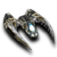
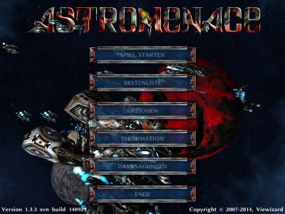
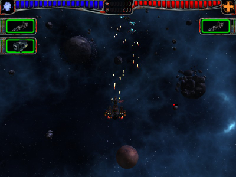

AstroMenace
Dieser Artikel wurde für die folgenden Ubuntu-Versionen getestet:
Ubuntu 14.04 Trusty Tahr
Zum Verständnis dieses Artikels sind folgende Seiten hilfreich:

AstroMenace  ist ein rasantes Shoot ’em up-Spiel. Feindlich gesinnte Außerirdische und Piraten müssen zerstört werden. Durch Aufrüstung des eigenen Raumschiffes mit neuen Waffen, besseren Systemen und Rümpfen kann man dieses immer weiter verbessern. Insgesamt stehen dem Spieler in den 15 Leveln 22 Schiffe zur Verfügung.
ist ein rasantes Shoot ’em up-Spiel. Feindlich gesinnte Außerirdische und Piraten müssen zerstört werden. Durch Aufrüstung des eigenen Raumschiffes mit neuen Waffen, besseren Systemen und Rümpfen kann man dieses immer weiter verbessern. Insgesamt stehen dem Spieler in den 15 Leveln 22 Schiffe zur Verfügung.
Das Spiel kann komplett mit der Maus gesteuert werden.
|  |
| Menü |
|  |
| Spielszene |
Installation¶
In dieser Anleitung wird auf das Kompilieren des Spiels eingegangen. Sofern man den Weg über die Paketverwaltung gehen möchte, bitte diese Seite konsultieren.
Quellcode¶
Vorbereitung¶
Um das Spiel aus dem Quellcode zu kompilieren, sind die folgenden Pakete notwendig [1]:
cmake
fonts-linuxlibertine
g++
libalut-dev
libfontconfig1-dev
libfreetype6-dev
libogg-dev
libopenal-dev
libsdl1.2-dev
libvorbis-dev
libXinerama-dev
make
subversion
ttf-dejavu-core
 mit apturl
mit apturl
Paketliste zum Kopieren:
sudo apt-get install cmake fonts-linuxlibertine g++ libalut-dev libfontconfig1-dev libfreetype6-dev libogg-dev libopenal-dev libsdl1.2-dev libvorbis-dev libXinerama-dev make subversion ttf-dejavu-core
sudo aptitude install cmake fonts-linuxlibertine g++ libalut-dev libfontconfig1-dev libfreetype6-dev libogg-dev libopenal-dev libsdl1.2-dev libvorbis-dev libXinerama-dev make subversion ttf-dejavu-core
Durchführung¶
Im nächsten Schritt wird der Quellcode von der Entwicklerseite heruntergeladen [2]:
svn checkout http://svn.code.sf.net/p/openastromenace/code/ AstroMenace
Man wechselt in den neu entstandenen Ordner AstroMenace und beginnt den Kompiliervorgang [3]:
cmake ./ make
Abschließend erfolgt die Erstellung der VFS-Spieldaten:
./AstroMenace --pack --rawdata=./RAW_VFS_DATA
Über AstroMenace kann das Spiel aus dem Installationsverzeichnis heraus gestartet [4] werden. Auf Wunsch einen Menüeintrag [5] anlegen.
Bedienung¶
Beim ersten Start des Spiels wird die gewünschte Spielsprache ausgewählt. Unter "Optionen" kann man anschließend unter anderem Details zur Auflösung, Grafik und zur Lautstärke anpassen.
Die Einstellungen werden in der Konfigurationsdatei amconfig.xml im Homeverzeichnis unter ~/.config/astromenace/ abgespeichert.
Tastenkürzel¶
| Tastenkürzel | |
| Taste(n) | Funktion |
 / Mausbewegung / Mausbewegung | Steuerung |
Strg /  | Primärangriff |
/  | Sekundärangriff |
| F2 | FPS anzeigen / ausblenden |
| F5 - F7 | Spielgeschwindigkeit beeinflussen. |
| F8 | Ansicht der Waffentafel ändern. |
| F9 | Feuermodus der Primärwaffe ändern. |
| F10 | Feuermodus der Sekundärwaffe ändern. |
| F12 | Bildschirmfoto aufnehmen - diese werden auf dem Desktop abgespeichert. |
| Esc | Pause |


- Erstellt mit Inyoka
-
 2004 – 2017 ubuntuusers.de • Einige Rechte vorbehalten
2004 – 2017 ubuntuusers.de • Einige Rechte vorbehalten
Lizenz • Kontakt • Datenschutz • Impressum • Serverstatus -
Serverhousing gespendet von